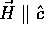

The GIC superconductors display a number of anomalous superconducting properties, many of which can be understood in terms of the participation of graphitic electrons in superconductivity. Among the unusual properties that the class of GIC superconductors exhibits are large critical field anisotropy 1/epsilon, extended linearity or positive curvature of the critical fields Hc2(T) , and both type I and type II superconductivity in the same specimen for different applied field orientations.
These features have been studied in C4KHg, the first stage KHg-GIC, with a particular emphasis on understanding the reason for the two different superconducting transition temperatures reported in this compound. The lower Tc of 0.8 K found in gold-colored specimens is associated with presence of the Ic = 10.83 Å beta phase. Superconducting properties are reported for the single-phase specimens, which have only a single repeat distance, Ic = 10.24 Å. The Tc = 1.5 K single-phase samples are similar to the mixed-phase specimens except that the pink samples have slightly lower critical fields Hc2, resulting in type I behavior for applied field orientations near . Hc2(t) has been measured for a large reduced temperature range for the Tc = 1.5 K C4KHg samples, and an approximately linear temperature dependence has been found. This extended linearity is reminiscent of that seen in NbSe2 and other TMDC's.[13] Competition between superconductivity and a charge-density wave is another common feature of the TMDC's.[23] The presence of a CDW instability in the beta phase of C4KHg may help to explain the effect of hydrogen[45] and applied pressure[15] on this compound. The proposed CDW has yet to be directly observed experimentally.